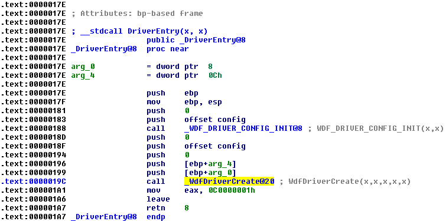
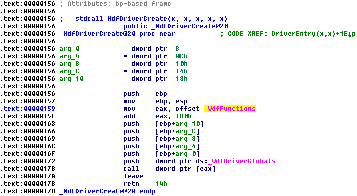
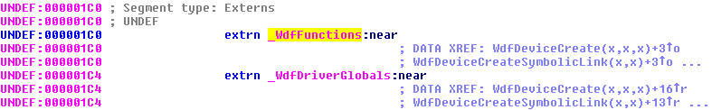
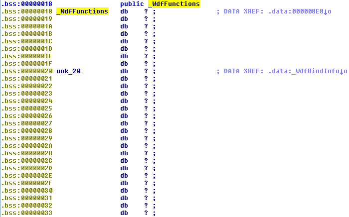
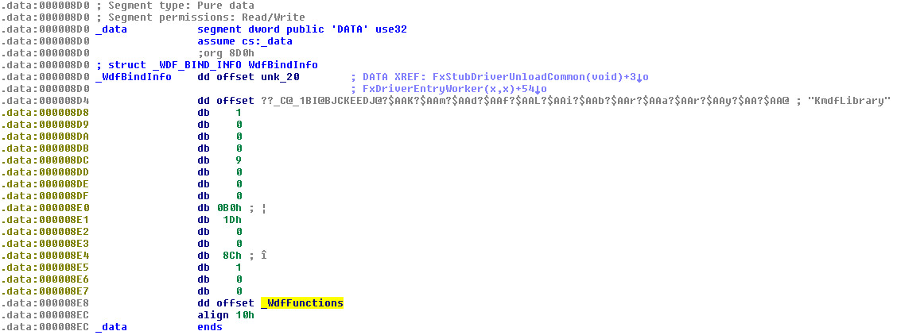
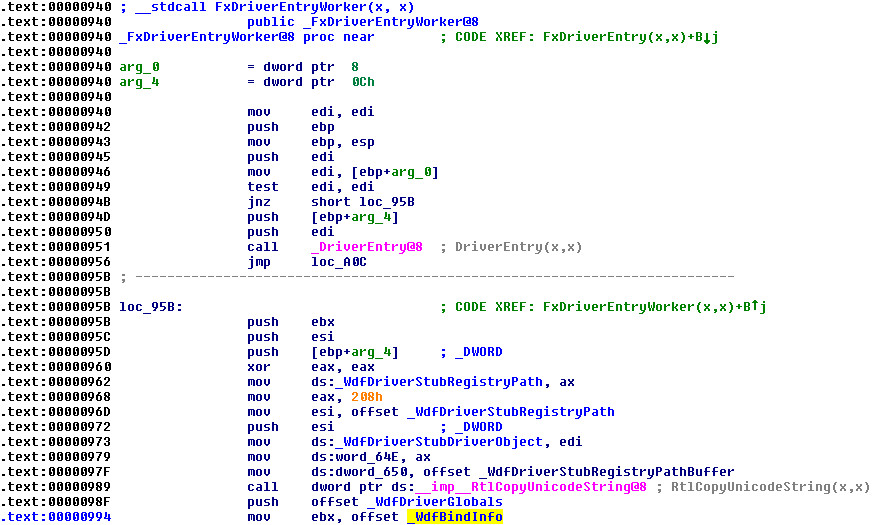
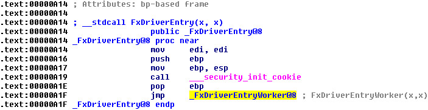

在WDF驅動程式架構，系統載入驅動程式時，呼叫的進入點是FxDriverEntry()，而不是原本的DriverEntry()，只是FxDriverEntry()最終會呼叫DriverEntry()，這個DriverEntry()也就是原本使用者寫的進入點，在DriverEntry()裡面會呼叫WdfDriverCreate()用來產生WDF Driver Object，讓司徒好奇的是，WdfDriverCreate()裡面的WdfFunctions[]究竟是如何得到的呢？因為司徒在移植KMDF(從C/C++到MASM32)時，便找不到這個指標的內容，於是司徒逆向看下相關檔案，這才發現WdfFunctions[]是執行後填入的東西，過程分析如下
司徒使用一個簡單的範例做測試：
public DriverEntry
.data
config WDF_DRIVER_CONFIG <0>
.code
DriverEntry proc pOurDriver:PDRIVER_OBJECT, pOurRegistry:PUNICODE_STRING
invoke WDF_DRIVER_CONFIG_INIT, offset config, 0
invoke WdfDriverCreate, pOurDriver, pOurRegistry, WDF_NO_OBJECT_ATTRIBUTES, offset config, WDF_NO_HANDLE
mov eax, STATUS_UNSUCCESSFUL
ret
DriverEntry endp
end DriverEntry
.end
接著逆向main.obj



typedef void (*WDFFUNC) (void); extern WDFFUNC WdfFunctions [];
接著逆向WDFDriverEntry.lib



